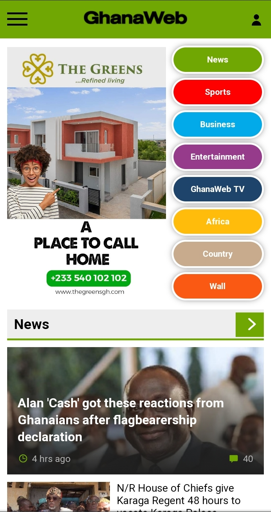

Repetition
Ghana Web
ghanaweb.com
This website shows the principle of repetition on the homepage with a list of button links are somehow related .
Contrast
Dropbox
dropbox.com
The dropbox website has a black background which the writtings and the button are white and blue respectively and are easily seen from the background.
White Space
Quip
qiup.com

This Quip website has alot of white space around their high focus points. You can see this in the header and main sections, as blank space surrounds the logo and phone.